Números de Hill: diversidad taxonómica, filogenética y funcional
Source:vignettes/hill_diversity_es.Rmd
hill_diversity_es.RmdMicroBioMeta calcula la diversidad y devuelve la figura
lista para publicar. Este tutorial explica el marco de los números de
Hill y cómo usarlo en las funciones que trabajan con él:
alpha_hill_plot() y alpha_diversity_plot()
para diversidad alfa, y beta_ord_plot() y
beta_test_table() para diversidad beta. Los cálculos con
árbol o con rasgos vienen de hilldiv3 (Alberdi and Gilbert
2019).
Por qué números de Hill
Los números de Hill (Hill 1973; Jost 2007) expresan la diversidad como un número efectivo: cuántos taxones igual de abundantes darían la misma diversidad que la muestra. Una muestra con valor 10 es el doble de diversa que una con valor 5, algo que no se cumple con los índices de Shannon o Simpson.
El orden define cuánto peso reciben las abundancias:
| Orden | Peso de los taxones | Equivale a |
|---|---|---|
| Todos cuentan igual | Riqueza | |
| Proporcional a su abundancia | Exponencial de Shannon | |
| Sobre todo los dominantes | Inverso de Simpson |
La misma idea se extiende a otras dos dimensiones de la diversidad (Chao et al. 2014). Las tres son números efectivos, en equivalentes de especies o linajes (Chao et al. 2021), pero cuentan cosas distintas: taxones, linajes o grupos funcionales. Di siempre cuál reportas.
diversity |
Qué toma en cuenta | Qué necesitas | Unidad |
|---|---|---|---|
"taxonomic" |
Abundancias | La tabla | Número efectivo de features |
"phylogenetic" |
Qué tan emparentados están los taxones (Chao et al. 2010) | Árbol enraizado | Número efectivo de linajes |
"functional" |
Qué tan distintos son sus rasgos (Chao et al. 2019) | Rasgos por taxón | Número efectivo de grupos funcionales |
Preparar los datos
Usamos el ejemplo de hongos del paquete (hongos micorrízicos arbusculares, 18S).
library(MicroBioMeta)
table_fungi <- read.delim(
system.file("extdata", "table_fungi.txt", package = "MicroBioMeta"),
row.names = 1, check.names = FALSE
)
taxonomy_fungi <- read.delim(
system.file("extdata", "taxonomy_fungi.txt", package = "MicroBioMeta"),
check.names = FALSE
)
metadata_fungi <- read.delim(
system.file("extdata", "metadata_fungi.txt", package = "MicroBioMeta"),
check.names = FALSE
)
metadata_fungi <- metadata_fungi[metadata_fungi$SAMPLEID %in% colnames(table_fungi), ]
table_fungi <- table_fungi[, metadata_fungi$SAMPLEID]
table_fung <- merge_feature_taxonomy(table = table_fungi, taxonomy = taxonomy_fungi)El árbol
Las puntas del árbol deben ser los taxones de la tabla. Con QIIME 2
(Bolyen et al. 2019), el árbol sale de
las secuencias representativas, y exported-tree/tree.nwk es
lo que lees en R:
qiime phylogeny align-to-tree-mafft-fasttree \
--i-sequences rep-seqs.qza \
--output-dir phylogeny
qiime tools export --input-path phylogeny/rooted_tree.qza --output-path exported-tree
tree_fungi <- ape::read.tree(
system.file("extdata", "tree_fungi.nwk", package = "MicroBioMeta")
)Revisa el árbol antes de usarlo: unas pocas secuencias espurias en una rama muy larga pueden aplanar y , porque esa rama domina el árbol. En este ejemplo quitamos tres ASVs Unassigned (10 lecturas) por esa razón.
Los rasgos
traits es una tabla con taxones en filas y rasgos en
columnas. Sirve cualquier rasgo medido. En comunidades microbianas, una
fuente común es la tabla de familias de genes predichas por ASV con
PICRUSt2 (Douglas et al. 2020), como
EC_predicted.tsv. Son predicciones, no mediciones, así que
repórtalas como tales.
traits_fungi <- read.delim(
system.file("extdata", "traits_fungi.txt", package = "MicroBioMeta"),
row.names = 1, check.names = FALSE
)Los taxones que están en la tabla pero no en el árbol o en los rasgos se descartan con un aviso que dice cuántos son. Aquí pasa con los tres ASVs de arriba.
Diversidad alfa con números de Hill
alpha_hill_plot() usa la misma llamada para los tres
tipos. Solo cambian diversity y su insumo, y el título del
eje y sigue la unidad de cada tipo.
alpha_hill_plot(
table = table_fung,
metadata = metadata_fungi,
x_col = "Type_of_soil",
fill_col = "Type_of_soil",
facet_by = "Treatment",
x_axis_title = "Type of soil",
show_legend = FALSE,
stat = "kruskal.test"
)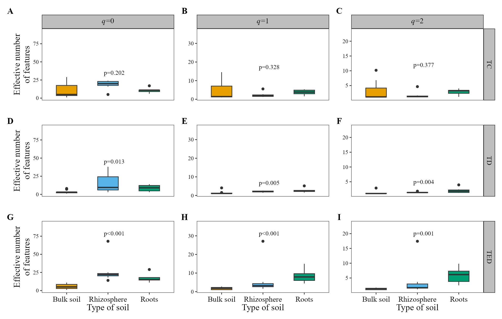
alpha_hill_plot(
table = table_fung,
metadata = metadata_fungi,
x_col = "Type_of_soil",
fill_col = "Type_of_soil",
facet_by = "Treatment",
x_axis_title = "Type of soil",
show_legend = FALSE,
stat = "kruskal.test",
diversity = "phylogenetic",
tree = tree_fungi
)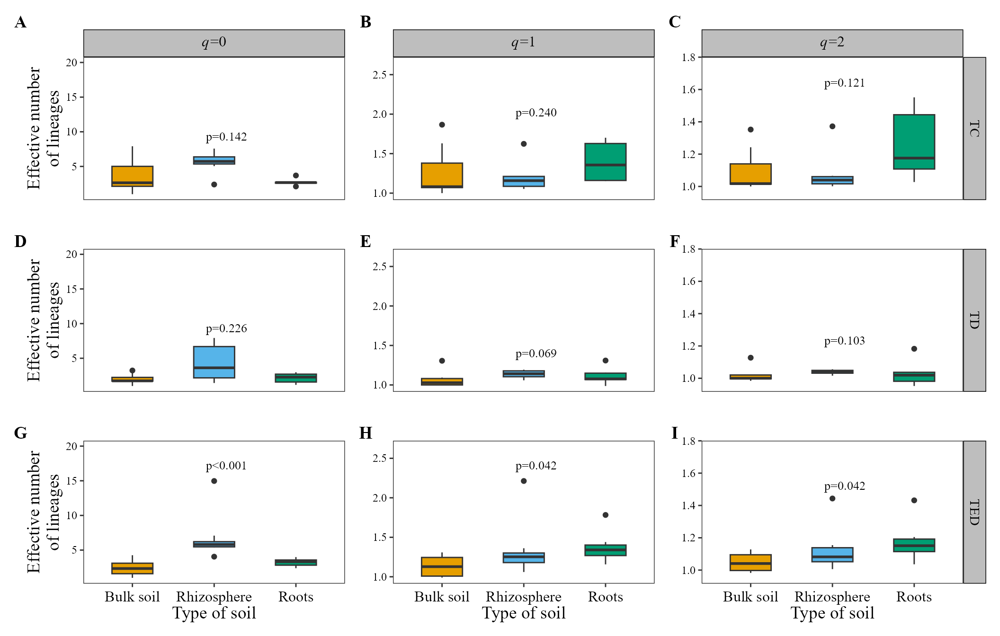
alpha_hill_plot(
table = table_fung,
metadata = metadata_fungi,
x_col = "Type_of_soil",
fill_col = "Type_of_soil",
facet_by = "Treatment",
x_axis_title = "Type of soil",
show_legend = FALSE,
stat = "kruskal.test",
diversity = "functional",
traits = traits_fungi
)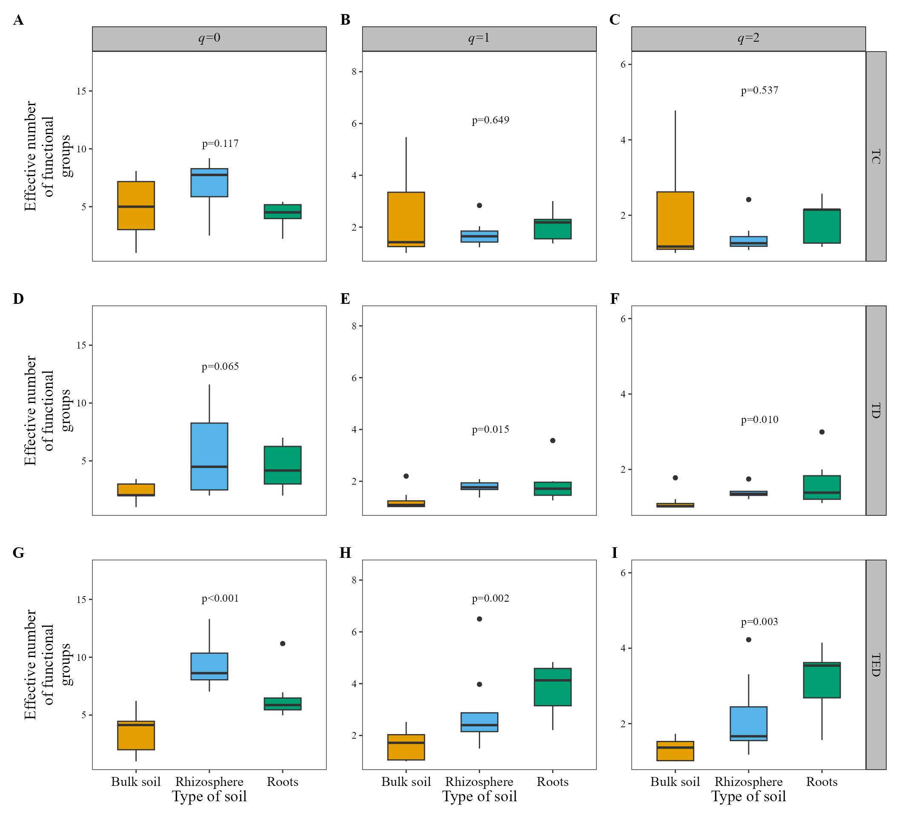
Dos detalles de estos valores:
- Los valores filogenéticos se leen a una misma profundidad, la
profundidad media del árbol en las muestras (Chiu et al. 2014), para que
las muestras sean comparables. Por eso una muestra puede quedar apenas
por debajo de 1.
iNEXT.3Dusa en cambio la edad de la raíz, así que sus valores no son iguales. - Los valores funcionales dependen de un umbral
:
los taxones a esa distancia o más cuentan como grupos funcionales
distintos. Por defecto es la distancia media entre dos lecturas de las
muestras juntas (Chao et al. 2019), y puedes
cambiarlo con
tau.
Índices clásicos
alpha_diversity_plot() muestra los índices clásicos,
también con diversity:
diversity |
Índice | Significado | Unidad |
|---|---|---|---|
"taxonomic" |
Chao1, Shannon, Simpson | Riqueza y equitatividad | Distinta en cada índice |
"phylogenetic" |
PD de Faith (Faith 1992) | Suma de longitudes de rama hasta la raíz | Longitud de rama |
"functional" |
Q de Rao (Rao 1982) | Distancia media entre dos lecturas al azar | Distancia (Gower) |
alpha_diversity_plot(
table = table_fung,
metadata = metadata_fungi,
x_col = "Type_of_soil",
fill_col = "Type_of_soil",
x_axis_title = "Type of soil",
show_legend = FALSE,
stat = "kruskal.test",
diversity = "phylogenetic",
tree = tree_fungi
)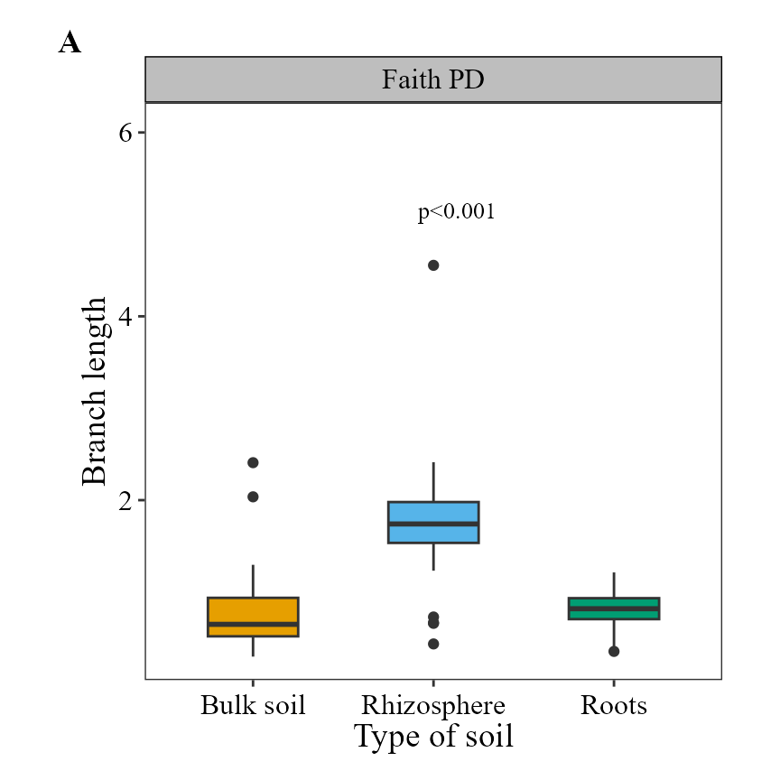
alpha_diversity_plot(
table = table_fung,
metadata = metadata_fungi,
x_col = "Type_of_soil",
fill_col = "Type_of_soil",
x_axis_title = "Type of soil",
show_legend = FALSE,
stat = "kruskal.test",
diversity = "functional",
traits = traits_fungi
)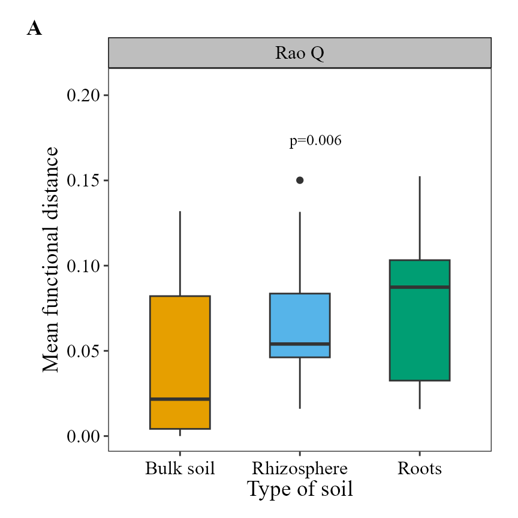
Estos índices se relacionan con los números de Hill, pero no son la misma cantidad. El PD de Faith es el filogenético antes de dividir entre la profundidad del árbol, y la Q de Rao da el funcional mediante cuando es la mayor distancia entre dos taxones. Elige el índice clásico si necesitas comparar con estudios que lo reportan, y el número de Hill si quieres todos los tipos en un mismo marco.
Diversidad beta
Las métricas
hilldiv3::hillpair() convierte los números de Hill en
disimilitudes entre muestras (Jost 2007; Chiu et al. 2014; Chao et al. 2023). En
MicroBioMeta son una opción más de distance,
junto a "jaccard" o "aitchison", con el orden
definido por q. Van de 0 (muestras idénticas) a 1 (nada
compartido), así que no tienen problema de unidades.
distance |
Tipo | Taxonómica: , , | Filogenética: , , |
|---|---|---|---|
"U" |
Tipo Jaccard | Jaccard, Horn, solapamiento regional | Phylo-Jaccard (UniFrac no ponderado), phylo-Horn, phylo-regional-overlap |
"C" |
Tipo Sørensen | Sørensen, Horn, Morisita-Horn | Phylo-Sørensen (PhyloSor), phylo-Horn, phylo-Morisita-Horn |
"S" |
Recambio tipo Jaccard | Jaccard, sin nombre, Morisita-Horn | Phylo-Jaccard, sin nombre, phylo-Morisita-Horn |
"V" |
Recambio tipo Sørensen | Sørensen, sin nombre, sin nombre | Phylo-Sørensen, sin nombre, sin nombre |
Los nombres filogenéticos vienen de Chiu et
al. (2014), y PhyloSor de
Bryant et al. (2008); UniFrac es de Lozupone and Knight (2005). Las versiones
funcionales no tienen nombres propios: Chao et
al. (2019) las llama medidas
funcionales tipo Sørensen y tipo Jaccard, así que repórtalas así, con
y
.
En
,
"U" es phylo-Horn, no el UniFrac ponderado.
Estas métricas describen las diferencias en términos de números de Hill; no son composicionales. Si tu análisis principal usa CLR/Aitchison, mantenlo y usa estas como complemento.
Ordenación
Las métricas de Hill funcionan con ordination = "PCoA" o
"NMDS", igual que cualquier distancia que no sea
"compositional". beta_ord_plot() mantiene la
misma escala en los dos ejes, así que la gráfica se achata cuando el
primer eje explica casi toda la variación. En el ejemplo funcional
agregamos ggplot2::coord_cartesian() para llenar la figura;
ten en cuenta que los ejes ya no comparten escala.
beta_ord_plot(
table = table_fung,
metadata = metadata_fungi,
distance = "U",
q = 1,
ordination = "PCoA",
group_col = "Type_of_soil",
legend_title = "Type of soil"
)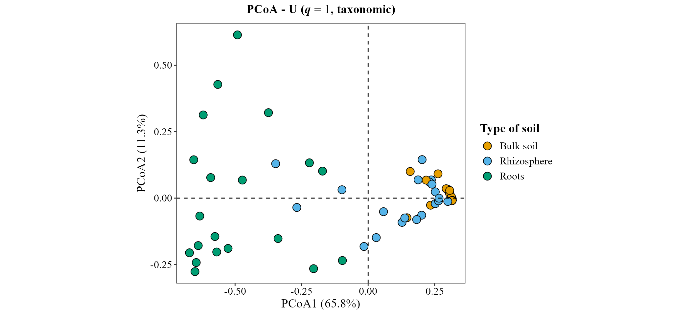
beta_ord_plot(
table = table_fung,
metadata = metadata_fungi,
distance = "U",
q = 0,
ordination = "PCoA",
group_col = "Type_of_soil",
legend_title = "Type of soil",
diversity = "phylogenetic",
tree = tree_fungi
)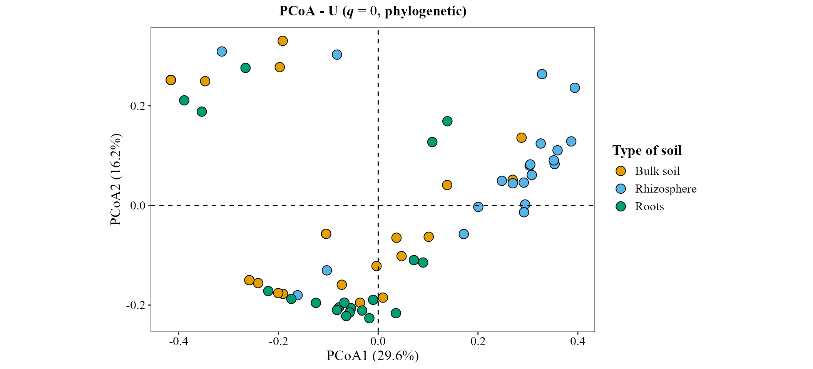
beta_ord_plot(
table = table_fung,
metadata = metadata_fungi,
distance = "U",
q = 1,
ordination = "PCoA",
group_col = "Type_of_soil",
legend_title = "Type of soil",
diversity = "functional",
traits = traits_fungi
) + ggplot2::coord_cartesian()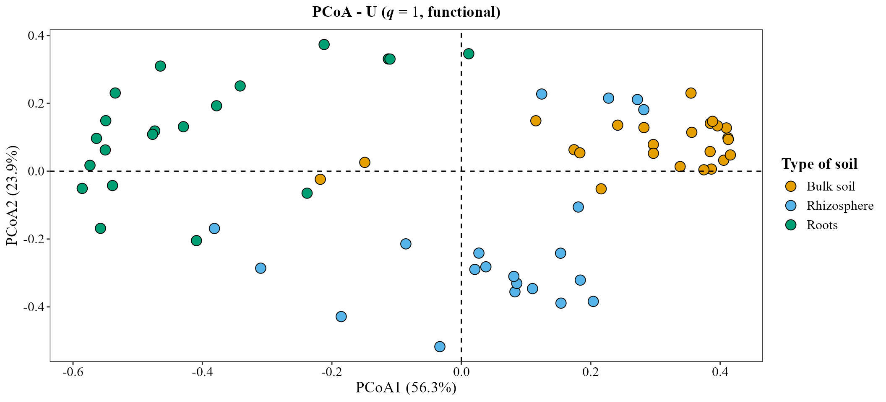
PERMANOVA y betadisper
beta_test_table() recibe los mismos argumentos. Un
PERMANOVA (Anderson 2001) prueba si
los grupos difieren, y betadisper (Anderson 2006) si difiere su
dispersión. Reporta ambos: un PERMANOVA significativo con dispersiones
desiguales puede reflejar diferencias de dispersión, no de posición. En
este ejemplo betadisper es significativo, así que lee el PERMANOVA de
Type_of_soil con eso en mente.
Taxonómica, en :
beta_test_table(
table = table_fung,
metadata = metadata_fungi,
formula_str = "Type_of_soil * Treatment",
distance = "U",
q = 1
)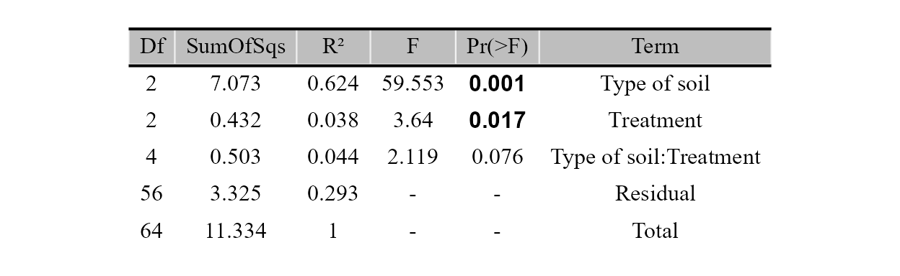
beta_test_table(
table = table_fung,
metadata = metadata_fungi,
formula_str = "Type_of_soil",
test = "betadisper",
distance = "U",
q = 1
)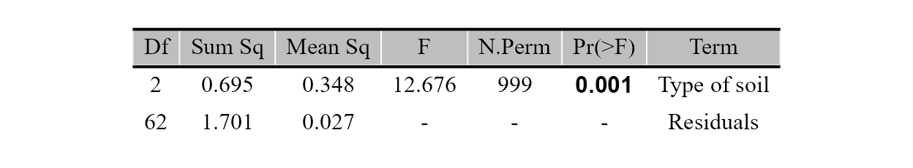
Filogenética, en (UniFrac no ponderado):
beta_test_table(
table = table_fung,
metadata = metadata_fungi,
formula_str = "Type_of_soil * Treatment",
distance = "U",
q = 0,
diversity = "phylogenetic",
tree = tree_fungi
)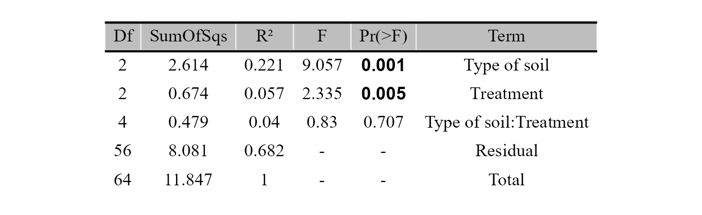
beta_test_table(
table = table_fung,
metadata = metadata_fungi,
formula_str = "Type_of_soil",
test = "betadisper",
distance = "U",
q = 0,
diversity = "phylogenetic",
tree = tree_fungi
)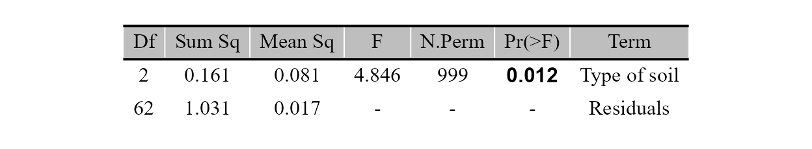
Funcional, en :
beta_test_table(
table = table_fung,
metadata = metadata_fungi,
formula_str = "Type_of_soil * Treatment",
distance = "U",
q = 1,
diversity = "functional",
traits = traits_fungi
)
beta_test_table(
table = table_fung,
metadata = metadata_fungi,
formula_str = "Type_of_soil",
test = "betadisper",
distance = "U",
q = 1,
diversity = "functional",
traits = traits_fungi
)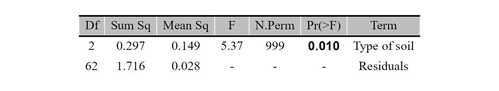
Referencias
Información de la sesión
## R version 4.6.1 (2026-06-24 ucrt)
## Platform: x86_64-w64-mingw32/x64
## Running under: Windows 10 x64 (build 19045)
##
## Matrix products: default
## LAPACK version 3.12.1
##
## locale:
## [1] LC_COLLATE=Spanish_Latin America.utf8
## [2] LC_CTYPE=Spanish_Latin America.utf8
## [3] LC_MONETARY=Spanish_Latin America.utf8
## [4] LC_NUMERIC=C
## [5] LC_TIME=Spanish_Latin America.utf8
##
## time zone: America/Mexico_City
## tzcode source: internal
##
## attached base packages:
## [1] stats graphics grDevices utils datasets methods base
##
## other attached packages:
## [1] MicroBioMeta_0.99.0
##
## loaded via a namespace (and not attached):
## [1] deldir_2.0-4 gridExtra_2.3.1
## [3] permute_0.9-10 rlang_1.3.0
## [5] magrittr_2.0.5 otel_0.2.0
## [7] matrixStats_1.5.0 compiler_4.6.1
## [9] mgcv_1.9-4 hillR_0.5.2
## [11] png_0.1-9 systemfonts_1.3.2
## [13] vctrs_0.7.3 stringr_1.6.0
## [15] pkgconfig_2.0.3 fastmap_1.2.0
## [17] backports_1.5.1 XVector_0.52.0
## [19] labeling_0.4.3 rmarkdown_2.32
## [21] ragg_1.5.2 purrr_1.2.2
## [23] xfun_0.61 Rfast_2.1.5.2
## [25] randomForest_4.7-1.2 cachem_1.1.0
## [27] jsonlite_2.0.0 DelayedArray_0.38.2
## [29] BiocParallel_1.46.0 jpeg_0.1-11
## [31] broom_1.0.13 parallel_4.6.1
## [33] cluster_2.1.8.2 R6_2.6.1
## [35] stringi_1.8.9 bslib_0.12.0
## [37] RColorBrewer_1.1-3 car_3.1-5
## [39] zCompositions_1.6.2 GenomicRanges_1.64.0
## [41] jquerylib_0.1.4 Rcpp_1.1.2
## [43] Seqinfo_1.2.0 SummarizedExperiment_1.42.0
## [45] knitr_1.52 hilldiv3_3.1.1
## [47] directlabels_2026.8.27 IRanges_2.46.0
## [49] Matrix_1.7-5 splines_4.6.1
## [51] tidyselect_1.2.1 dichromat_2.0-1
## [53] abind_1.4-8 yaml_2.3.12
## [55] ggVennDiagram_1.5.7 vegan_2.7-6
## [57] codetools_0.2-20 lattice_0.22-9
## [59] tibble_3.3.1 Biobase_2.72.0
## [61] withr_3.0.3 S7_0.2.2
## [63] evaluate_1.0.5 desc_1.4.3
## [65] survival_3.8-6 RcppParallel_6.2.1
## [67] pillar_1.11.1 ggpubr_1.0.0
## [69] MatrixGenerics_1.24.0 carData_3.0-6
## [71] stats4_4.6.1 NADA_1.6-1.2
## [73] generics_0.1.4 truncnorm_1.0-9
## [75] S4Vectors_0.50.3 ggplot2_4.0.3
## [77] scales_1.4.0 ALDEx2_1.44.0
## [79] glue_1.8.1 tools_4.6.1
## [81] interp_1.1-6 data.table_1.18.6.1
## [83] ggsignif_0.6.4 ggvenn_0.1.19
## [85] fs_2.1.0 cowplot_1.2.0
## [87] grid_4.6.1 tidyr_1.3.2
## [89] ape_5.8-1 latticeExtra_0.6-31
## [91] nlme_3.1-169 patchwork_1.3.2
## [93] Formula_1.2-6 cli_3.6.6
## [95] zigg_0.0.2 textshaping_1.0.5
## [97] S4Arrays_1.12.0 dplyr_1.2.1
## [99] gtable_0.3.6 ggh4x_0.3.1
## [101] rstatix_1.1.0 sass_0.4.10
## [103] digest_0.6.39 progressr_1.0.0
## [105] BiocGenerics_0.58.1 SparseArray_1.12.2
## [107] ggrepel_0.9.8 htmlwidgets_1.6.4
## [109] farver_2.1.2 htmltools_0.5.9
## [111] pkgdown_2.2.1 lifecycle_1.0.5
## [113] MASS_7.3-65